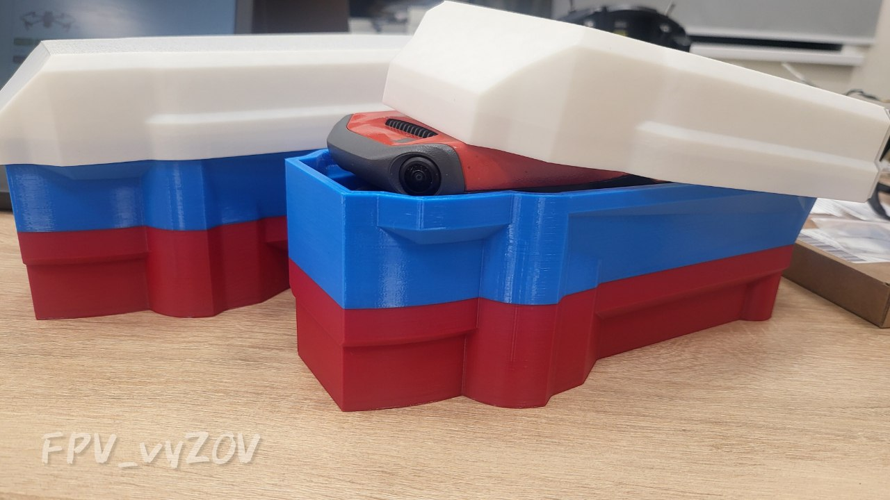
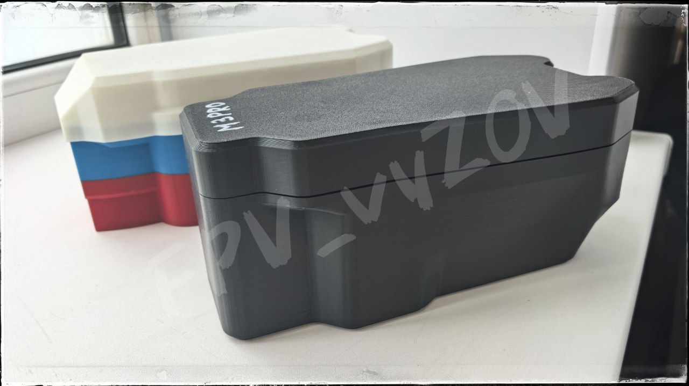

Чехол (кейс) для транспортировки и хранения DJI Mavic 3
.
✔️Подходит для дронов DJI Mavic 3/ 3 Classic/ 3 Cine/ 3Т/ 3Е
⚠️ Не подходит для DJI Mavic 3 Pro
Защищает камеру и пропеллеры при транспортировке (в отличие от оригинального чехла, который закрывает только подвес).
📎
Еще будет полезно
#3D_МОДЕЛИ_ДЛЯ_ДРОНОВ
#3D_МОДЕЛИ_ДЛЯ_ДРОНОВ_DJI
#DJI
Это вложение из поста t.me/platforma_fpv/248/1566

Чехол (кейс) для транспортировки и хранения DJI Mavic 3 всей серии.
✔️ Подходит для дронов DJI Mavic 3/ 3 Classic/ 3 Cine/ 3Т/ 3Е/
3PRO
ℹ️ Кейс доработан для размещения всей 3й серии DJI (в том числе m3 pro), внутренний объем увеличен, масса и внешние габариты изделия снижены, корпус имеет плавные обводы, направляющие крышки не выступают за габарит основного корпуса.
Данный чехол защищает камеру и пропеллеры при транспортировке (в отличие от оригинального чехла, который закрывает только подвес).
📎
Еще будет полезно
при поддержке
#3D_МОДЕЛИ_ДЛЯ_ДРОНОВ
#3D_МОДЕЛИ_ДЛЯ_ДРОНОВ_DJI
#DJI
Это вложение из поста t.me/platforma_fpv/248/1684

Кейс для АКБ (М3 всей серии).
Удобен для хранения и
переноски в рюкзаке
аккумуляторной батареи для DJI М3 (всей 3й серии).
Кейс будет особенно актуален
в дождь.
Еще будет полезно:
при поддержке
#3Д_для_периферийных_устройств
#АКБ
#DJI
#техник_бпла
Веб-страница создана автоматически на основе поста пользователя ПЛАТФОРМА_FPV